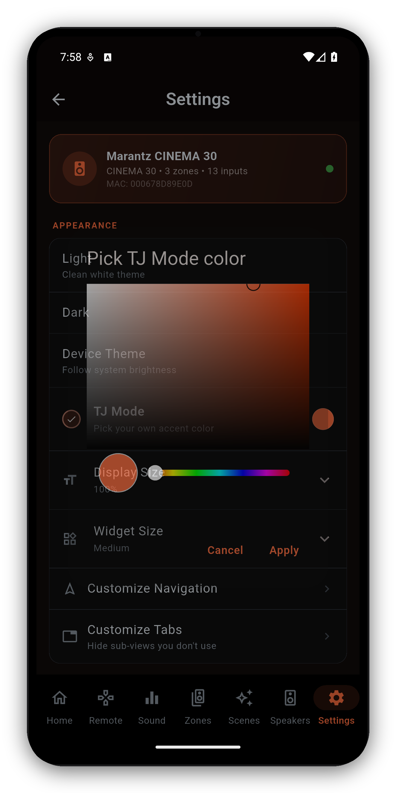

Everything that tailors AVR Maestro to you and your gear - manage receivers, theme the whole app with Color Theme, tune the volume step, grab a debug log for support, and back up your entire setup to a file.

| Section | What's in it |
|---|---|
| Devices | Switch receivers, full Device Information, Manage Receivers (rename/delete), Add Receiver. |
| Receiver | Remote Lock - lock or unlock the receiver's own physical IR remote from the app. Only shown on receivers that support it. |
| Appearance | Theme (Light / Dark / Device / AMOLED true-black) and Color Theme - pick any accent color, from the wheel or by typing a hex code like #FF8C00, and the app rebuilds its palette around it. A code it cannot read is refused with the reason, and a color too close to black is refused separately, because on the AMOLED theme it would have nothing to show against. Plus Display Size, Widget Size, Customize Navigation and Customize Tabs. |
| Audio | Volume Step (0.5-2.0 dB), whether the absolute volume or dB shows on top, and Gradual vs Direct volume presets - Gradual (the default) ramps smoothly to a preset's target instead of jumping straight there, on the main zone and Zone 2/3. |
| Help | Explanation cards toggle, restore dismissed cards, and a live Debug Log with one-tap Save & Share for support. |
| Developer Tools | Hidden until you tap the version number (in About) seven times - then it stays available across launches until you remove it. Raw Telnet / HEOS commands, AJAX dump, and a volume-cap wire diagnostic. |
| Backup | Export every receiver, preset and preference to a .zip file that also bundles your custom input icons, and import to restore on a new phone - works on both iOS and Android. Older .json backups still import fine. The file holds no credentials, only receiver IPs and your own preset names, so it is safe to share. |
| App | Rate the app, About, App Manual (this guide), website, Discord, Facebook, privacy, terms, licenses. |
| More from MiyaraHub | Browse all our apps opens the MiyaraHub developer page on your store - Google Play, the App Store or the Microsoft Store, depending on your device - so you can see every app we make in one place. |
#FF8C00, or the three-character shorthand). If the code is wrong the app tells you what is wrong with it rather than just refusing. You can also set Display/Widget size and customize navigation and tabs.One-time purchase, no ads, no subscriptions. Connect in under a minute.